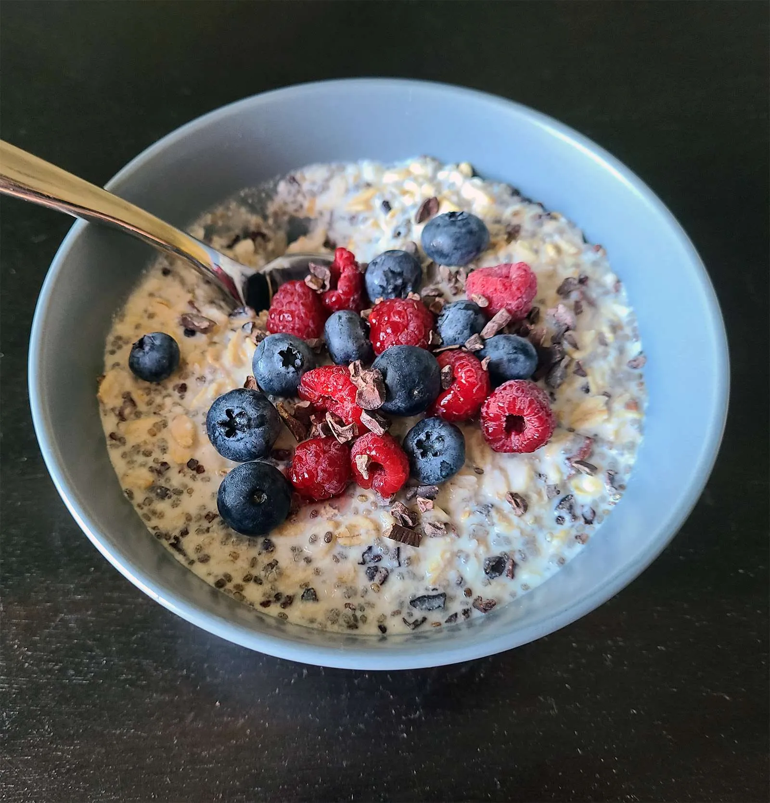

The Ultimate Morning Fuel "Overnight Oats à la Tecles" are far more than just a simple breakfast; they are a true superfood powerhouse. By combining hearty rolled oats with a blend of chia, flax, sesame, and hemp seeds, this recipe creates a nutrient-dense base that softens perfectly overnight. A bright squeeze of fresh lemon juice along with a mix of water and oat milk provides a light, refreshing lift, ensuring the perfect consistency is waiting for you the moment you wake up.
Freshness and Crunch in Every Bite The magic happens the next morning when you add the final fresh touches. Crisp apple pieces bring a natural sweetness and juiciness, while a generous serving of nuts and raw cacao nibs adds a satisfying crunch. Finished with a drizzle of high-quality flaxseed oil for an extra boost of omega-3s, this breakfast is the ideal choice for anyone looking to kickstart their day with maximum energy and vibrant flavor with minimal morning effort.